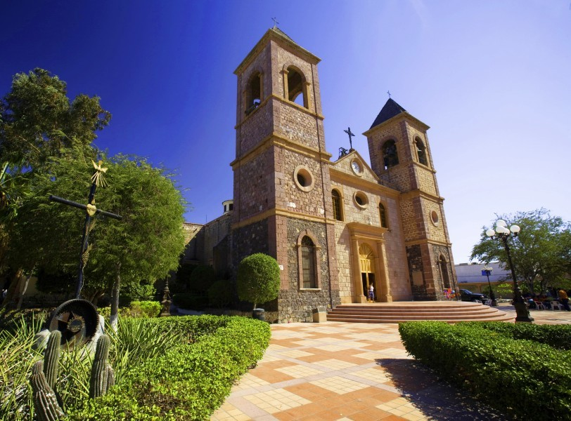
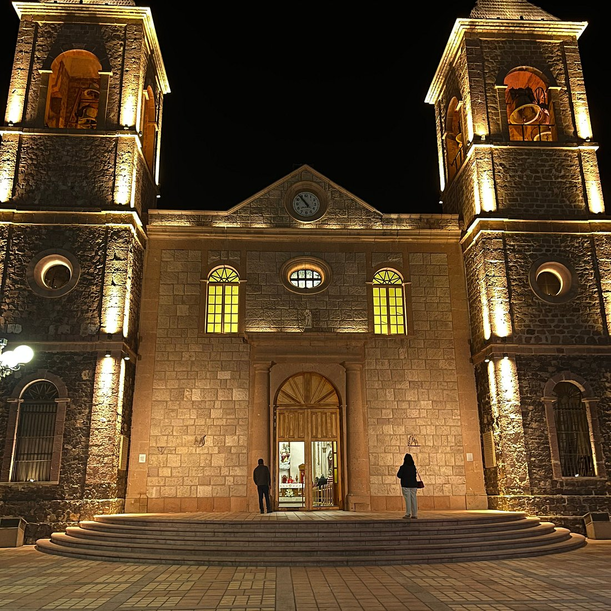
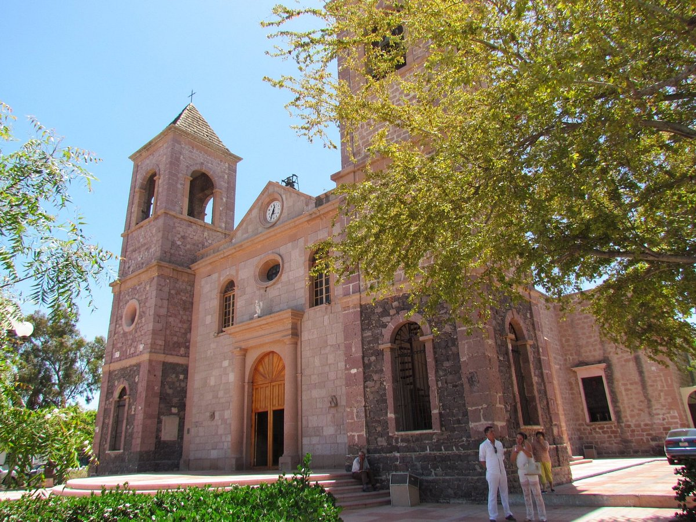

Catedral de Nuestra Señora La Paz

MINI INFORMACIÓN
( viven especies endémicas, como el babisuri, la liebre negra y el juancito , que no se encuentran en otro lugar del mundo)
La Catedral de La Paz es la sede de la diócesis de La Paz en Baja California Sur. Se ubica en el centro de la ciudad de La Paz, Baja California Sur. Está ubicada en el lugar donde se levantó la misión fundada por los jesuitas en el siglo XVIII.

ESTILO
(Su exterior es neoclásico sobrio y sencillo, pero su interior conserva retablos barrocos del siglo XVIII.)
De estilo neoclásico sobrio en el exterior, presenta una sencilla fachada y dos torres, las cuales guardan semejanza con las de los templos norteamericanos. El interior del templo posee bellos retablos barrocos del siglo XVIII, los cuales provienen de otras misiones que corrieron la suerte de ser abandonadas.

HISTORIA
(Dentro de la Catedral hay una réplica del Sagrario de la Basílica de San Pedro en Roma.)
La catedral actual fue construida entre 1861 y 1865 , es decir, durante la segunda mitad del siglo XIX. Su construcción fue ordenada por el obispo Juan Francisco Escalante y Moreno , quien fue el primer obispo del Vicariato Apostólico de Baja California, creado en 1855.
La primera piedra se colocó oficialmente el 24 de marzo de 1861 , en una ceremonia donde el jefe político Rafael Espinosa actuó como padrino. La obra duró cuatro años y fue financiada principalmente gracias a las donaciones de los feligreses locales.